氧化还原滴定题目E
0901
对 Ox-Red 电对, 25℃ 时条件电位( ¢) 等于
--------------------------------------( )
¢) 等于
--------------------------------------( )
(A) 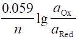 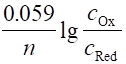 +
+
 +
+
(C) 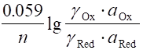 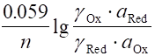 +
+
 +
+
0902
以下电对中, 条件电位随离子强度增高而增高的是 -----------------------------------( )
(A) Fe3+/Fe2+ (B) Ce4+/Ce3+
(C) Sn4+/Sn2+ (D) Fe(CN)63-/Fe(CN)64-
0903
在含有 Fe3+和 Fe2+的溶液中, 加入下述何种溶液, Fe3+/Fe2+电对的电位将升高(不考虑离子强度的影响)--------------------------------------------------------------------------------------( )
(A) 稀 H2SO4 (B) HCl (C) NH4F (D) 邻二氮菲
0904
Fe3+ 与 Sn2+反应的平衡常数对数值(lgK)为 ---------------------------------------------( )
( (Fe3+/Fe2+)=
0.77 V,
(Fe3+/Fe2+)=
0.77 V,  (Sn4+/Sn2+)=
0.15 V)
(Sn4+/Sn2+)=
0.15 V)
(A) (0.77-0.15)/0.059 (B) 2×(0.77-0.15)/0.059
(C) 3×(0.77-0.15)/0.059 (D) 2×(0.15-0.77)/0.059
0905
当两电对的电子转移数均为 2 时, 为使反应完全度达到 99.9%, 两电对的条件电位差至少应大于 ----------------------------------------------------------------------------------------------( )
(A) 0.09 V (B) 0.18 V (C) 0.27 V (D) 0.36 V
0906
若两电对的电子转移数分别为 1 和 2 , 为使反应完全度达到 99.9%, 两电对的条件电位差至少应大于 ----------------------------------------------------------------------------------------( )
(A) 0.09 V (B) 0.18 V (C) 0.24 V (D) 0.27 V
0907
Hg2Cl2/Hg 电对的能斯特方程为______________________________________。
已知:  (Fe3+/Fe2+)=
0.77 V
(Fe3+/Fe2+)=
0.77 V  (Sn4+/Sn2+)=
0.15 V
(Sn4+/Sn2+)=
0.15 V
则反应 Sn2++ 2Fe3+ = Sn4++ 2Fe2+的平衡常数为________________________。
0909
根据 (Fe2+/Fe)= -0.440 V,
(Fe2+/Fe)= -0.440 V,  (Sn4+/Sn2+)=
0.154 V;
(Sn4+/Sn2+)=
0.154 V;  (Sn2+/Sn)=
-0.136 V,
(Sn2+/Sn)=
-0.136 V,  (Cu2+/Cu+)=
0.159 V
(Cu2+/Cu+)=
0.159 V
 (Cu+/Cu)=
0.522 V
(Cu+/Cu)=
0.522 V
判断在酸性溶液中用金属铁还原 Sn4+时生成 ____________________________, 而还原 Cu2+时则生成_______________________________________。
0910
为降低某电对的电极电位, 可加入能与________________态形成稳定络合物的络合剂; 若要增加电极电位, 可加入能与________________态形成稳定络合物的络合剂。
0911
通过理论计算说明, Co2+的氨性溶液([NH3]=1.0 mol/L)敞开在空气中, 钴以何价态存在, 请计算出c(Co(III))/c(Co(Ⅱ)) 值。 已知: Co(NH3)62+的 lgb1~lgb6为 2.11, 3.74, 4.79, 5.55, 5.73, 5.11
Co(NH3)63+的 lgb1~lgb6为 6.7, 14.0, 20.1, 25.7, 30.8, 33.2
pKb (NH3)= 4.74,  (Co3+/Co2+)=
1.84 V,
(Co3+/Co2+)=
1.84 V,  (O2/H2O)
= 1.229 V
(O2/H2O)
= 1.229 V
0912
计算下列反应的条件平衡常数(在 1 mol/L HCl介质中): 2Fe3++ 3I-= 2Fe2++ I3-
已知 ¢ (Fe3+/Fe2+)=
0.68 V,
¢ (Fe3+/Fe2+)=
0.68 V,  ¢ (I3-/I-)-= 0.545 V
¢ (I3-/I-)-= 0.545 V
当 25 mL 0.050 mol/L Fe3+与 25 mL 0.15 mol/L I-混合后, 溶液中残留的 Fe3+ 还有百分之几? 如何才能使 Fe3+ 定量还原?
0913
计算 Hg2+/Hg22+ 电对在[CN-]= 0.10 mol/L 溶液中的条件电位 (忽略离子强度的影响)。
已知:  (Hg2+/Hg22+)
= 0.907 V, Ksp [Hg2(CN)2]= 5.0×10-40
; Hg2+与CN-络合物的 lgb4= 41.4
(Hg2+/Hg22+)
= 0.907 V, Ksp [Hg2(CN)2]= 5.0×10-40
; Hg2+与CN-络合物的 lgb4= 41.4
0915
试计算反应 1mol/L HCl
2Fe3++ Sn2+ 2Fe2++ Sn4+
的平衡常数及化学计量点时反应进行的完全程度。[已知 ¢ (Fe3+/Fe2+)=
0.68 V,
¢ (Fe3+/Fe2+)=
0.68 V,  ¢ (Sn4+/Sn2+)=
0.14 V]
¢ (Sn4+/Sn2+)=
0.14 V]
0916
计算pH = 8.0 时, As(Ⅴ)/As(III)电对的条件电位(忽略离子强度的影响), 并从计算结果判断以下反应的方向: H3AsO4 + 2H+ + 3I- HAsO2 + I3- + 2H2O
已知:  (H3AsO4/HAsO2)
= 0.559 V,
(H3AsO4/HAsO2)
= 0.559 V,  (I3-/I-)
-=0.545 V
(I3-/I-)
-=0.545 V
H3AsO4:Ka1=10-2.2, Ka2=10-7.0, Ka3=10-11.5 HAsO2: Ka=10-9.22
0917
下列反应中滴定曲线在化学计量点前后对称的是 -------------------------------------( )
(A) 2Fe3++ Sn2+ = Sn4++ 2Fe2+
(B) MnO4-+ 5Fe2+ + 8H+ = Mn2+ + 5Fe3+ + 4H2O
(C) Ce4+ + Fe2+ = Ce3+ + Fe3+
(D) I2 + 2S2O32- = 2I- + S4O62-
0918
反应 2A++ 3B4+ → 2A4++3B2+到达化学计量点时电位是 ---------------------------( )
(A) [ 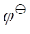 (A) +
(A) + (B)]/2
(B) [2
(B)]/2
(B) [2 (A)+ 3
(A)+ 3
(C) [3 (A)+ 2
(A)+ 2 (B)]/5
(D) 6[
(B)]/5
(D) 6[ (A) - (B)]/0.059
(A) - (B)]/0.059
0919 已知在1 mol/L HCl 中,  (Fe3+/Fe2+)=
0.68 V, (Sn4+/Sn2+)=
0.14 V, 计算以 Fe3+滴定Sn2+至 99.9%、100%、100.1%时的电位分别为多少?
----------------------------------( )
(Fe3+/Fe2+)=
0.68 V, (Sn4+/Sn2+)=
0.14 V, 计算以 Fe3+滴定Sn2+至 99.9%、100%、100.1%时的电位分别为多少?
----------------------------------( )
(A) 0.50 V、 0.41 V、 0.32 V (B) 0.17 V、 0.32 V、 0.56 V
(C) 0.23 V、 0.41 V、 0.50 V (D) 0.23 V、 0.32 V、 0.50 V
0920
用K2Cr2O7滴定 Fe2+, 在化学计量点时, 有关离子浓度的关系是-------------------( )
(A) [Fe3+] = [Cr3+], [Fe2+] = [Cr2O72-] (B) 3[Fe3+] = [Cr3+], [Fe2+] = 6[Cr2O72-]
(C) [Fe3+] = 3[Cr3+], [Fe2+] = 6[Cr2O72-] (D) [Fe3+] = 3[Cr3+], 6[Fe2+] = [Cr2O72-]
0921
已知 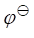
(A) 1.1×10-18 (B) 92.5 (C) 36.2 (D) 2.8×106
0922
(1) 用 0.02 mol/L KMnO4溶液滴定 0.1 mol/L Fe2+溶液
(2) 用 0.002 mol/L KMnO4溶液滴定 0.01 mol/L Fe2+溶液
上述两种情况下其滴定突跃将是 ----------------------------------------------------------------( )
(A) 一样大 (B) (1)>(2) (C) (2)>(1) (D) 缺电位值, 无法判断
0923
已知在1 mol/L HCl溶液中¢ (Fe3+/Fe2+)=0.68
V, 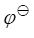
(A) 0.14 V (B) 0.32 V (C) 0.50 V (D) 0.68 V
0924
0.05 mol/L SnCl2溶液 10 mL 与 0.10 mol/L FeCl3溶液 20 mL 相混合, 平衡时体系的电位是----( )
[已知此条件时 ¢ (Fe3+/Fe2+)= 0.68 V, ¢ (Sn4+/Sn2+)= 0.14 V]
(A) 0.14 V (B) 0.32 V (C) 0.50 V (D) 0.68 V
0925
用铈量法测定铁时, 滴定至 50% 时的电位是 --------------------------------------------( )
[已知¢ (Ce4+/Ce3+)= 1.44 V, ¢ (Fe3+/Fe2+)= 0.68 V]
(A) 0.68 V (B) 1.44 V (C) 1.06 V (D) 0.86 V
0926
向 20.00 mL 0.1000 mol/L的Ce4+溶液中分别加入 15.00 mL、 25.00 mL 0.1000 mol/L FeCl2, 平衡时体系的电位分别为 ____________, __________。 [¢ (Ce4+/Ce3+)= 1.44 V, ¢ (Fe3+/Fe2+)= 0.68 V]
0927
根据下表所给数据, 判断以下滴定中化学计量点前后的j值:
|
滴定体系 |
|
j (V) |
|
|
|
化学计量点前0.1% |
化学计量点 |
化学计量点后0.1% |
|
Ce4+滴定Fe2+ |
0.86 |
1.06 |
|
|
Fe3+滴定Sn2+ |
|
0.32 |
0.50 |
0928
根据下表所给数据, 判断用 0.1 mol/L Fe3+滴定 0.05 mol/L Sn2+时, 化学计量点后 0.1% 的j值(V)。
|
化学计量点前0.1% |
化学计量点 |
化学计量点后0.1% |
|
0.23 |
0.32 |
|
0929
根据下表所给数据, 判断用Ce4+滴定Fe2+时表中各点的j值(V):
|
浓度 |
化学计量点前0.1% |
化学计量点 |
化学计量点后0.1% |
|
0.10 mol/L |
0.86 |
1.06 |
1.26 |
|
0.010 mol/L |
|
|
|
0930
下图是用X(x+1)+滴定 M+的滴定曲线, 产物为 Mm+1和 X+, 半反应为
M(m+1)+ + me == M+ (M) X(x+1)+ + xe == X+ (X)
(M)=___________ V, (X)=____________ V,
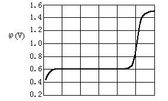
V(X(x+1)+)
0931
KMnO4滴定 Fe2+的理论计算滴定曲线与实验滴定曲线有较大的差别, 这是因为 ___________________________________________________; 而化学计量点电位不在滴定突跃中点, 这又是因为__________________________________________________________。
0932
溴酸钾法测定苯酚的反应如下:
BrO3- + 5Br- + 6H+ → 3Br2+ 3H2O
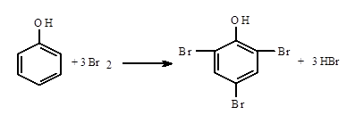
Br2 + 2I- → 2Br- + I2 I2 + 2S2O32- → 2I- + S4O62-
在此测定中, Na2S2O3与苯酚的物质的量之比为-----------------------------------------( )
(A) 6:1 (B) 4:1 (C) 3:1 (D) 2:1
0933
用间接碘量法测定 BaCl2的纯度时, 先将 Ba2+沉淀为 Ba(IO3)2, 洗涤后溶解并酸化, 加入过量的 KI, 然后用Na2S2O3标准溶液滴定, 此处BaCl2与Na2S2O3的计量关系[n(BaCl2):n(Na2S2O3)]为-------------------------------------------------------------------------------( )
(A) 1:2 (B) 1:3 (C) 1:6 (D) 1:12
0934
某含 MnO 矿石,用 Na2O2 熔融后得到 Na2MnO4, 以水浸取之, 煮沸浸取液以除去过氧化物, 酸化, 此时 MnO42-歧化为 MnO4-和 MnO2, 滤去MnO2, 滤液用Fe2+的溶液滴定, 此时n(MnO):n(Fe2+)是_______________。
0935
在以 K2Cr2O7法测定 Fe2O3的含量时, 0.0100 mol/L K2Cr2O7 10.0 mL 相当于 Fe2O3 ______________________ mg 。[Mr(Fe2O3)= 159.7]
0936
称取某一种纯净铁氧化物 1.000 g, 溶解后处理为 Fe2+, 用0.06667 mol/L K2Cr2O7滴定, 计耗去 32.40 mL, 则此铁氧化物的组成是__________________。
[Ar(Fe)= 55.85, Mr(FeO)= 71.85, Mr(Fe2O3)= 159.69, Mr(Fe3O4)= 231.54]
0937
用K2Cr2O7法测定铁, 试样重 1.000 g, 若使滴定管上的 K2Cr2O7 溶液体积读数在数值上恰好等于试样中铁的质量分数, 则配制 K2Cr2O7溶液的浓度为__________ ________________mol/L。
[Mr(K2Cr2O7)= 294.2, Ar(Fe)= 55.85]
0938
某工厂经常测定铜矿中铜的质量分数, 固定称取矿样 1.000 g, 为使滴定管读数恰好为 w(Cu), 则 Na2S2O3标准溶液的浓度应配制成 ___________mol/L。 [Ar(Cu)= 63.55]
0939
一含 Pb2+的试液, 使 Pb2+生成 PbCrO4↓, 沉淀经过滤洗涤后用酸溶解, 加入过量 KI, 以淀粉作指示剂, 用 Na2S2O3 标准溶液滴定, 则n(Pb2+):n(S2O32-)为__________________。
0940
氧化还原法测 KBr 纯度时, 先将 Br-氧化成 BrO3-, 除去过量氧化剂后加入过量 KI, 以Na2S2O3滴定析出的I2。此处Br-与S2O32-的n(Br-):n(S2O32-)= ____________________。
0941
取同量 KIO3×IO3溶液两份,其一直接用 NaOH滴定消耗V(mL),其二酸化后加过量 KI, 以 Na2S2O3滴定消耗 2V, 今知 NaOH 溶液为 0.1000 mol/L, 则 Na2S2O3浓度为 ________________________ mol/L 。
0942
移取25.00 mL 0.02000 mol/L KMnO4溶液,加入一定量K2CrO4溶解后, 加酸和过量KI,析出的 I2耗去0.1000 mol/L Na2S2O3 30.00 mL,计算 K2CrO4质量。 [Mr(KMnO4)= 158.0, Mr(K2CrO4)= 194.2]
0943
为测定 SrCrO4的溶度积, 将新制得的纯 SrCrO4沉淀与蒸馏水共振荡, 达平衡后, 用干滤纸过滤, 移取滤液 25.00 mL, 酸化, 加入过量 KI, 析出的 I2 耗去 0.05002 mol/L Na2S2O3 7.04 mL, 计算 SrCrO4的 Ksp。
0944
称取纯铁丝 0.1676 g, 加稀 H2SO4 溶解成 Fe2+后, 需用KMnO4 30.00 mL 滴定至终点, 而 0.2520 g 含草酸试样需用 KMnO4 20.00 mL作用完全, 计算 H2C2O4・2H2O的质量分数。
[Ar(Fe)= 55.85, Mr(H2C2O4×2H2O)= 126.0]
0945
0.5000 g 含 FeC2O4试样, 需用 0.02000 mol/L KMnO4 25.00 mL 滴定至终点, 求 FeC2O4的质量分数。
[Ar(Fe)= 55.85, Mr(FeC2O4)= 143.9]
0946
检验某病人血液中的含钙量, 取 10.0 mL 血液, 稀释后用 (NH4)2C2O4 溶液处理, 使Ca2+生成CaC2O4沉淀,沉淀经过滤洗涤后,将其溶解于强酸中,然后用0.0500 mol/L KMnO4溶液滴定,用去1.20 mL,试计算此血液中钙的浓度(g/L)。 [Ar(Ca)= 40.0]
0947
称取含有 KI 试样 0.5000 g, 溶于水先用Cl2氧化 I-为 IO3-, 煮沸除去过量 Cl2后, 加过量 KI 并酸化, 析出 I2 耗去 0.02082 mol/L Na2S2O3 21.30 mL, 计算 KI的质量分数。 [Mr(KI)= 166.0 ]
0948
称取含钾试样 0.2102 g, 溶解后沉淀为 K2NaCo(NO2)6, 沉淀经洗涤后溶解于酸中,用 0.02005 mol/L KMnO4 滴定 (NO2-→NO3-, Co3+→Co2+) 计耗去18.25 mL。计算 K的质量分数。 [Ar(K)= 39.10]
0949
称取二氧化锰试样 0.5000 g, 溶解后在酸性介质中加入 0.6700 g 基准Na2C2O4。 待充分反应后, 以 0.02000 mol/L KMnO4溶液返滴定过量的 Na2C2O4 至终点时, 消耗 30.00 mL。 计算试样中 MnO2 的质量分数。 [Mr(MnO2)= 86.94, Mr(Na2C2O4)= 134.0]
0950
用重铬酸钾法测定铁, 称取矿样 0.2500 g, 滴定时消耗 K2Cr2O7标准溶液23.68 mL, 此K2Cr2O7标准溶液 25.00 mL 在酸性介质中与过量的 KI 作用后, 析出的 I2需用 20.00 mL 的 Na2S2O3溶液滴定, 而此 Na2S2O3 1.00 mL 相当于 0.01587 g I2。请计算矿样中 Fe2O3的质量分数。[Mr(Fe2O3)= 159.7, Mr(I2)= 253.8]
0951
用K2Cr2O7测定铁矿中铁含量, 若称样为 1.000 g, 为使滴定管读数恰好为试样中铁的质量分数, 问配制1 L K2Cr2O7标准溶液, 应称取多少克 K2Cr2O7? [Ar(Fe)= 55.85, Mr(K2Cr2O7)= 294.18]
0952
在一定量纯 MnO2固体中, 加入过量盐酸,使 MnO2全部溶解, 将反应生成的Cl2气导入过量 KI 溶液中, 被 Cl2氧化成的I2以 0.1000 mol/L Na2S2O3溶液滴定, 耗用 20.00 mL, 求此 MnO2固体的质量。 [Mr(MnO2)= 86.94]
0953
用碘量法测定肼(H2NNH2)的纯度基于以下反应: N2H4 + 2I2 = N2↑ + 4H+ + 4I-
称取 1.4286 g 试样溶于水并定容为 1 L, 移取 50.00 mL 试液,滴定时消耗碘标准溶液 42.41mL。标定碘时,称取0.4123 g As2O3基准物溶解于NaOH溶液, 滴定该溶液到pH≈8, 耗去碘液 40.28 mL。 计算肼的纯度。 [Mr(As2O3)= 197.84, Mr(H2NNH2)= 32.045]
0954
称取含 BaCl2试样 0.5000 g, 溶于水后加 25.00 mL 0.05000 mol/L KIO3 将 Ba2+沉淀为 Ba(IO3)2, 滤去沉淀, 洗涤, 加入过量 KI 于滤液中并酸化, 滴定析出的 I2耗去 0.1000 mol/L Na2S2O3标准溶液 21.18 mL, 计算 BaCl2的质量分数。 [Mr(BaCl2)=208.3]
0955
称取含有As2O3、As2O5及惰性物的试样1.000 g, 溶于NaOH 并调至 pH≈8, 滴定耗去0.02500 mol/L I2溶液 20.00 mL。 然后用浓 HCl 将此溶液酸化至约 4 mol/L, 加入过量 KI, 析出的 I2耗去 0.1500 mol/L Na2S2O3 30.00 mL, 计算试样中 As2O3 与 As2O5 的质量分数。 [Mr(As2O3)= 197.8, Mr(As2O5)= 229.8]
0956
将As2O3+As2O5+惰性物质的混合物溶解,在pH=8的溶液中用I2标准溶液滴定[1.000 mL I2 1.000 mL KMnO4 0.05000 mmol FeSO4・(NH4)2SO4・6H2O], 消耗20.00 mL, 然后将所得溶液酸化至强酸性, 加入过量 KI, 生成的 I2需要30.50 mL的Na2S2O3滴定[1.000 mL Na2S2O3
0.01000 mmol KH(IO3)2],计算试样中As2O3与As2O5分别有多少克?
[Mr(As2O3)=197.8, Mr(As2O5)=229.8]
0.05000 mmol FeSO4・(NH4)2SO4・6H2O], 消耗20.00 mL, 然后将所得溶液酸化至强酸性, 加入过量 KI, 生成的 I2需要30.50 mL的Na2S2O3滴定[1.000 mL Na2S2O3
0.01000 mmol KH(IO3)2],计算试样中As2O3与As2O5分别有多少克?
[Mr(As2O3)=197.8, Mr(As2O5)=229.8]
0957
称取含 KBr 和 KI 的混合试样 1.000 g, 溶解并定容至 200 mL后, 作如下测定:
(1) 移取 50.00 mL试液, 在近中性条件下, 以溴水充分处理, 此时I- 量转变为 IO3-。 将溴驱尽, 加入过量 KI 溶液, 酸化, 生成的 I2采用淀粉指示剂, 以 0.1000 mol/L Na2S2O3 溶液滴定至终点时, 消耗 30.00 mL。
(2) 另取 50.00 mL 试液, 用H2SO4酸化, 加入足量 K2Cr2O7 溶液处理, 将生成的 I2和 Br2 蒸馏并收集在含有过量 KI 的弱酸性溶液中, 待反应完全后, 以 0.1000 mol/L Na2S2O3溶液滴定其中的 I2至终点时, 消耗 15.00 mL。
计算混合试样中 KI 和 KBr 的质量分数。 [Mr(KI)= 166.0, Mr(KBr)= 119.0]
0958
0959
移取一定量的乙二醇(C2H6O2)试液,用50.00mL KIO4溶液处理,待反应完全后, 将混合液用碱调至pH=8.0, 加入过量KI, 释放出的 I2以 0.05000 mol/L Na3AsO3 溶液滴定至终点时, 用去 14.00 mL。另取 50.00 mL KIO4 溶液, pH=8.0时加入过量 KI, 释放出的 I2以 0.05000 mol/L Na3AsO3 溶液滴定至终点时,用去40.00 mL。计算试液中含乙二醇多少毫克? [Mr(C2H6O2)=62.05]
有关反应式为: CH2OHCH2OH + IO4- == 2HCHO + IO3- + H2O
IO4- + 2I-+ H2O == IO3-+ I2+ 2OH-
I2+ HAsO32-+ H2O == 2I-+ HAsO42-+ 2H+
0960
今有含 PbO 和 PbO2 的混合物, 用高锰酸钾法测定其含量。 称取该试样0.7340 g, 加入 20.00 mL 0.2500 mol/L 草酸溶液, 将 PbO2还原为 Pb2+, 然后用氨水中和溶液, 使全部 Pb2+ 形成 PbC2O4 沉淀。 过滤后将滤液酸化, 用KMnO4 标准溶液滴定, 用去 0.04000 mol/L KMnO4 溶液 10.20 mL。沉淀溶解于酸中, 再用同一浓度的 KMnO4 溶液滴定, 用去 30.25 mL。计算试样中 PbO 和 PbO2 的质量分数。
[Mr(PbO2)= 239.2, Mr(PbO)= 223.2]
0961
称取含 Na2S 的试样 0.1000 g溶于水,在碱性条件下, 加入过量的0.02000 mol/L KMnO4标准溶液25.00 mL,此时 S2-被氧化为 SO42-,反应完全后酸化, 此时有 MnO2 生成并有过量 MnO4-, 再加入过量 KI 还原 MnO4- 与 MnO2为 Mn2+, 析出的 I2 消耗了 0.1000 mol/L Na2S2O3 标准溶液 15.00 mL。计算 Na2S 的质量分数。 [Mr(Na2S)= 78.04]
0962
称取含有苯酚的试样 0.5000 g, 溶解后加入 0.1000 mol/L KBrO3 溶液(其中含有过量的 KBr) 25.00 mL, 并加 HCl 酸化, 放置。待反应完全后 , 加入过量的 KI, 滴定析出的 I2 消耗 0.1003 mol/L Na2S2O3 溶液 29.91 mL。计算试样中苯酚的质量分数。 [Mr(C6H5OH)=94.11]
反应式为 C6H5OH + 3Br2 = C6H2Br3OH + 3HBr
0963
移取一定量的苯酚试液, 加入 0.02000 mol/L KBrO3 (含过量 KBr) 溶液25.00 mL, 然后用 H2SO4 调节至酸性, 待充分溴化后, 加入 0.1000 mol/L Na3AsO3 溶液 12.00 mL 以还原过量的 Br2, 最后以 0.02000 mol/L KBrO3 溶液滴定过量的 Na3AsO3 至终点时, 用去 1.47 mL。计算该试液中苯酚的质量。
[Mr(C6H5OH)= 94.11] 反应式为 C6H5OH + 3Br2 = C6H2Br3OH + 3HBr
0964
称取含 NaIO3 和 NaIO4 的混合试样 1.000 g,溶解后定容于 250 mL容量瓶中。 准确移取试液 50.00 mL, 用硼砂将试液调至弱碱性, 加入过量的 KI, 此时 IO4- 被还原为 IO3- (IO3- 不氧化 I-), 释放出的 I2 用 0.04000 mol/L Na2S2O3 溶液滴定至终点时, 消耗 20.00 mL。 另移取试液 25.00 mL, 用 HCl 调节溶液至酸性, 加入过量 KI, 释放出的 I2 消耗 0.04000 mol/L Na2S2O3 溶液 50.00 mL。计算混合试样中, NaIO3 和 NaIO4 的质量分数。 [Mr(NaIO3)= 198.0, Mr(NaIO4)= 214.0]
0965
移取 25.00 mL HCl 溶液, 加过量 KIO3 和 KI, 析出的 I2 消耗了0.05005 mol/L Na2S2O3 40.32 mL。 取同量 HCl 调至中性, 以 K2CrO4 为指示剂, 消耗了 AgNO3 溶液 21.02 mL。 计算此 AgNO3 的浓度。
0966
称取含铝试样 1.000 g, 溶解后定容为 250 mL, 移取 25.00 mL 此试液,调pH为9,加入8-羟基喹啉(HOC9H6N)沉淀 Al3+为Al(OC9H6N)3。沉淀经过滤洗涤后溶于 HCl 中, 加入 0.04000 mol/L KBrO3(含过量 KBr) 35.00 mL, 发生如下反应
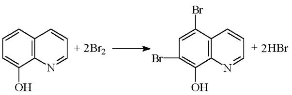
反应完全后, 加入过量 KI, 析出之 I2 耗去 0.1000 mol/L Na2S2O3 20.00 mL。计算试样中铝的质量分数。[Ar(Al)= 26.98]
0967
在用 K2Cr2O7 法测定 Fe 时, 加入H3PO4的主要目的是 ---------------------------( )
(A) 提高酸度, 使滴定反应趋于完全
(B) 提高化学计量点前Fe3+/Fe2+ 电对的电位, 使二苯胺磺酸钠不致提前变色
(C) 降低化学计量点前Fe3+/Fe2+电对的电位,使二苯胺磺酸钠在突跃范围内变色
(D) 有利于形成 Hg2Cl2 白色丝状沉淀
0968
下列现象各是什么反应 ？(填 A,B,C,D)
(1) MnO4-滴定 Fe2+时, Cl-的氧化被加快 ________________
(2) MnO4-滴定 C2O42-时, 速度由慢到快 ________________
(3) Ag+存在时, Mn2+氧化成 MnO4- ________________
(4) PbSO4 沉淀随 H2SO4 浓度增大溶解度增加 ________________
(A) 催化反应 (B) 自动催化反应 (C) 副反应 (D) 诱导反应
0969
预先氧化还原处理时, 过量的 KMnO4可通过 ___________________________方法除去; 而过量的 SnCl2可通过 ____________________________方法除去。
0970
在碘量法测定铜的过程中, 加入 KI 的作用是___________________________________ ____________________________________________________________; 加入 NH4HF2的作用是__________________________________________________________________________ ___________________________________________;加入KSCN的作用是_________________ ___________________________________________________________________________。
0971
碘量法用的 Na2S2O3 标准溶液, 在保存过程中吸收了 CO2 而发生分解作用
S2O32- + H2CO3 → HSO3- + HCO3- + S↓
若用此Na2S2O3滴定I2, 消耗Na2S2O3量____________(增大或减小), 从而导致测定结果____________(偏高或偏低)。若加入_________________________可防止以上分解作用。
0972
判断下列情况对测定结果的影响 (填偏高, 偏低, 无影响)。
(1) K2Cr2O7法测铁, SnCl2加入不足 ___________________________
(2) 草酸标定 KMnO4时, 酸度过低 _________________________
0973
基于间接碘量法通过用Na2S2O3滴定由IO3-所置换出的I2可以测定某些物质含量, 请填表说明测定以下物质滴定前的预处理及计量关系[n(被测物):n(滴定剂)] 。
|
被测物 |
滴定前处理 |
n(被测物):n(滴定剂) |
|
KI
|
|
|
|
BaCl2
|
|
|
0974
下面是测定As2O3-As2O5惰性物试样中两组分含量的分析流程图, 请将条件填在横线上。
(2) (5)
滴定剂______ 滴定剂______
(3) │ (4) (6) │ (7)
pH______│指示剂______ 酸度_____│加______试剂
(1) ↓ ↓
加______试剂 ┌──────┐ ┌───┐ ┌───┐
试样──────→│As(Ⅲ)As(Ⅴ) │─────→│As(Ⅴ) │→│As(Ⅲ) │
溶解 └──────┘ └───┘ └───┘
[ 测 As(Ⅲ) ] [测 As(Ⅲ)+As(Ⅴ)含量]
0975
设计 Fe3+- Cr3+溶液中 Cr3+测定方案。
|
预处理 |
滴定剂 |
滴定条件 必要试剂 |
指示剂及 颜色变化 |
计量关系 n(Cr):n(滴定剂) |
|
|
|
|
|
|
0976
某同学配制 0.02 mol/L Na2S2O3 500 mL, 方法如下: 在分析天平上准确称取 Na2S2O3・5H2O 2.482 g, 溶于蒸馏水中,加热煮沸, 冷却,转移至 500 mL 容量瓶中, 加蒸馏水定容摇匀, 保存待用。请指出其错误。
0977
某同学拟用如下实验步骤标定0.02 mol/L Na2S2O3, 请指出其三种错误(或不妥)之处, 并予改正。
称取 0.2315 g 分析纯 K2Cr2O7, 加适量水溶解后, 加入1 g KI, 然后立即加入淀粉指示剂, 用 Na2S2O3滴定至蓝色褪去, 记下消耗 Na2S2O3的体积, 计算Na2S2O3浓度。 [Mr(K2Cr2O7)= 294.2]
0978
某同学如下配制 0.02 mol/L KMnO4溶液, 请指出其错误。 准确称取 3.161 g 固体 KMnO4, 用煮沸过的去离子水溶解, 转移至 1000 mL 容量瓶, 稀释至刻度, 然后用干燥的滤纸过滤。
0979
为标定 0.05 mol/L Na2S2O3, 今选用 KIO3 为基准物, 简述标定方法 (如称取KIO3 的质量, 所需试剂, 指示剂, 计算 Na2S2O3 浓度的算式)。 [Mr(KIO3)= 214.0]
0980
设计用碘量法测定试液中 Ba2+ 的浓度的方案, 请用简单流程图表示分析过程, 并指出主要条件: 滴定剂、指示剂以及 Ba2+ 与滴定剂的计量关系。
0981
设计一种测定 H2SO4-H2C2O4 混合液中两组分浓度的方案(要求写出滴定剂, 指示剂, 滴定主要条件和计算式)。
0982
今欲分别测定 Ca2+、KMnO4溶液的浓度,若实验室仅有EDTA标准溶液, 简述如何测定(前处理, 滴定条件, 指示剂、滴定剂, 计算式, 其它试剂可任选, 但不能选其它标准溶液, 基准物)。
0983
一固体物质中含 MnSO4 和 MnO2,要求测定二者含量。请写明主要步骤、试剂、指示剂等及计算公式。
0984
计算在 4 mol/L HCl 溶液中的 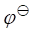
已知 (I3-/I-)-=0.54 V, 由以上数据计算说明 As(Ⅴ)氧化I-反应是否完全。
(I3-/I-)-=0.54 V, 由以上数据计算说明 As(Ⅴ)氧化I-反应是否完全。
为什么能用间接碘量法在 4 mol/L HCl中定量测定 As(Ⅴ)?
[ (H3AsO4/HAsO2)
= 0.56 V , HAsO2的 pKa为 9.22
(H3AsO4/HAsO2)
= 0.56 V , HAsO2的 pKa为 9.22
H3AsO4 的pKa1~pKa3分别是 2.20、 7.00、 11.50]
0985
称取某矿石 0.8000 g, 用重量法测知 Fe2O3 和 Al2O3 共 0.5500 g。 将此沉淀溶于酸后, 将 Fe(Ⅲ)还原为 Fe(Ⅱ), 然后用 0.03750 mol/L K2Cr2O7 标准溶液滴定, 用去 24.85 mL。计算试样中 FeO 和 Al2O3的质量分数。 [Mr(FeO)= 71.85, Mr(Fe2O3)=159.7, Mr(Al2O3)=101.96]
0986
为何测定 MnO4-时不采用 Fe2+标准溶液直接滴定, 而是在 MnO4-试液中加入过量 Fe2+标准溶液, 而后采用 KMnO4 标准溶液回滴?
0987
就 K2Cr2O7 标定 Na2S2O3 的实验回答以下问题。
(1) 为何不采用直接法标定, 而采用间接碘量法标定?
(2) Cr2O72-氧化 I-反应为何要加酸, 并加盖在暗处放置 5 min, 而用Na2S2O3 滴定前又要加蒸馏水稀释? 若到达终点后蓝色又很快出现说明什么? 应如何处理?
2901
当两电对的电子转移数均为1时，为使反应完全度达到99.9%，两电对的条件电位至少相差----------------------------------------------------------------------------------------------------( )
(A) 0.09V (B) 0.18V (C) 0.27V (D) 0.36V
2902
为使反应2A++3B4+=2A4++3B2+完全度达到99.9%，两电对的条件电位至少大于--( )
(A) 0.1V (B) 0.12V (C) 0.15V (D) 0.18V
2903
MnO4-/Mn2+电对的条件电位与pH的关系是-----------------------------------------------( )
(A)  ¢=
¢= -0.047pH
(B)
-0.047pH
(B)  ¢=
¢= -0.094pH
-0.094pH
(C) ¢=-0.12pH (D) ¢=-0.47pH
2904
在氧化还原滴定中,配制Fe2+标准溶液时,为防止Fe2+被氧化，应加入--------------( )
(A) HCl (B) H3PO4 (C) HF (D) 金属铁
2905
对于反应：BrO3-+6I-+6H+=Br-+3I2+3H2O
已知(BrO3-/Br-)=1.44V， (I2/I-)=0.55V，
(I2/I-)=0.55V，
则此反应平衡常数(25℃)的对数(lgK)为-----------------------------------------------------( )
(A) (1.44-0.55)/ 0.059 (B) 3×(1.44-0.55)/0.059
(C) 2×6×(1.44-0.55)/0.059 (D) 6×(1.44-0.55)/0.059
2906
某HCl溶液中c(Fe(III))=c(Fe(Ⅱ))=1mol/L，则此溶液中铁电对的条件电位¢为--( )
(A)  ¢ (Fe3+/Fe2+)
=
¢ (Fe3+/Fe2+)
=  (Fe3+/Fe2+)
(Fe3+/Fe2+)
(B)  ¢ (Fe3+/Fe2+)
=
¢ (Fe3+/Fe2+)
=  (Fe3+/Fe2+)+
0.059lg(aFe(Ⅲ) / aFe(Ⅱ) )
(Fe3+/Fe2+)+
0.059lg(aFe(Ⅲ) / aFe(Ⅱ) )
(C)  ¢ (Fe3+/Fe2+)
=
¢ (Fe3+/Fe2+)
=  (Fe3+/Fe2+)+
0.059lg(gFe3+・aFe(Ⅱ) / gFe2+・aFe(Ⅲ))
(Fe3+/Fe2+)+
0.059lg(gFe3+・aFe(Ⅱ) / gFe2+・aFe(Ⅲ))
(D) ¢ (Fe3+/Fe2+) = (Fe3+/Fe2+)+ 0.059lg(gFe2+・aFe(Ⅲ) / gFe3+・aFe(Ⅱ))
2907
欲以氧化剂OT滴定还原剂Rx, OT+n1e =RT Ox=Rx-n2e ，设n1=n2=1，要使化学计量点时，反应的完全程度达到99.9%，两个半反应的标准电位的最小差值应为--------------( )
(A) 0.177V (B) 0.354V (C) 0.118V (D) 0.236V
2908
已知 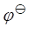 (Ag+/Ag)=0.80V，AgCl的Ksp为1.8×10-10，则
(Ag+/Ag)=0.80V，AgCl的Ksp为1.8×10-10，则
(A) 1.37V (B) 0.51V (C) 0.23V (D) 0.61V
2909
为使反应完全度达到99.9%， 请填写以下情况时两电对的条件电位差至少是多少伏(n为电子转移数)？ (1) n1=n2=1， D¢=________
(2) n1=n2=2， D¢=________
(3) n1=1，n2=2， D ¢=________
¢=________
2910
Fe3+/Fe2+电对的电位在加入HCl后会________；加入邻二氮菲后会________(指增加、降低或不变)。
2911
Fe(CN)63-/Fe(CN)64-电对的电位随离子强度增高______，随酸度增加______。
[H3Fe(CN)6是强酸,H4Fe(CN)6的pKa3=2.22、pKa4=4.17]
2912
比较下列值的大小并说明原因。 (AgCl/Ag)_____ (Ag+/Ag)，
因为___________________。
2913
比较下列 值的大小并说明原因。
值的大小并说明原因。
 (Cu2+/Cu+)_____
(Cu2+/Cu+)_____ (Cu2+/CuI)，因为________________。
(Cu2+/CuI)，因为________________。
2914
比较下列值的大小并说明原因。(Ag(NH3)2+/Ag)______ (Ag+/Ag)，因为_____________。
2915
已知在1mol/L H2SO4介质中，亚铁与高铁的邻二氮菲(Phen) 络合物的总稳定常数之比b[Fe(Phen)32+]/b[Fe(Phen)33+]=2.8×106。计算该体系中 Fe3+/Fe2+电对的条件电位。
[1mol/L H2SO4介质中， ¢ (Fe3+/Fe2+)=0.68V]
¢ (Fe3+/Fe2+)=0.68V]
2916
忽略离子强度的影响，计算pH为3. 0， 未与Fe3+ 络合的氟总浓度为0.10mol/L时 ¢ (Fe3+/Fe2+)的值。 (25℃时Fe3+¾F-络合物的lgb1至
lgb3分别为：5.2、9.2、11.9; lg 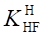 (Fe3+/Fe2+)
= 0.77V)
(Fe3+/Fe2+)
= 0.77V)
2917
求反应Fe3++Ti3+ = Fe2+ + Ti4+ 的平衡常数。 当用0.0100mol/L TiCl3 滴定0.0100 mol/L Fe3+溶液，直到KCNS不与试液显现红色，此时[Fe3+]=10-5mol/L，求溶液中[Ti4+]/[Ti3+]的比值。
[ (Fe3+/Fe2+)
= 0.77V，
(Fe3+/Fe2+)
= 0.77V， (TiO2/Ti3+)=0.1V]
(TiO2/Ti3+)=0.1V]
2918
已知Ag++e-=Ag ,  = 0.80V ; AgI(固)+e-=Ag+I- , = - 0.15V , 求AgI的溶度积(忽略离子强度影响)。
= 0.80V ; AgI(固)+e-=Ag+I- , = - 0.15V , 求AgI的溶度积(忽略离子强度影响)。
2919
计算在pH=3.0、未络合的EDTA总浓度为0.01mol/L时,Fe3+/Fe2+电对的条件电位。
[(Fe3+/Fe2+)=0.77 V，K(FeY2-)=1014.32， K(FeY-)=1025.1, 忽略离子强度影响]
2920
Fe3+与I-反应能否达到99.9%的完全度？为什么能用间接碘量法测定Fe3+？
[ ¢ (Fe3+/Fe2+)=0.70V，
¢ (Fe3+/Fe2+)=0.70V， ¢(I2/I-)=0.54V]
¢(I2/I-)=0.54V]
2921
在强酸性或在Zn2+存在下，Fe(CN)63-能氧化I-，借此用间接碘量法测定Fe(CN)63-。从以上事实判断H3Fe(CN)6和H4Fe(CN)6何者是弱酸?两者的锌盐溶解度哪个更小?
已知 [Fe(CN)3-/Fe(CN)4-]=0.36V,
[Fe(CN)3-/Fe(CN)4-]=0.36V,
 (I2/I-)=0.54V。
(I2/I-)=0.54V。
2922
用Ce4+滴定Fe2+，当体系电位为0.68V时,滴定分数为------------------------------( )
[ ¢ (Ce4+/Ce3+)=1.44V，
¢ (Ce4+/Ce3+)=1.44V， ¢ (Fe3+/Fe2+)=0.68V]
¢ (Fe3+/Fe2+)=0.68V]
(A) 0 (B) 50% (C) 100% (D) 200%
2923
用Fe3+滴定Sn2+在化学计量点的电位是----------------------------------------------------( )
[¢ (Fe3+/Fe2+)=0.68V，¢ (Sn4+/Sn2+)=0.14V]
(A) 0.75V (B) 0.68V (C) 0.41V (D) 0.32V
2924
已知在0.5mol/LH2SO4介质中， ¢ (Ce4+/Ce3+)=1.44V
¢ (Fe3+/Fe2+)=0.68V。计算此条件下以0.100mol/L Ce4+滴定 0.100mol/L Fe2+至化学计量点时，反应物及滴定产物的浓度----------------------(
)
¢ (Ce4+/Ce3+)=1.44V
¢ (Fe3+/Fe2+)=0.68V。计算此条件下以0.100mol/L Ce4+滴定 0.100mol/L Fe2+至化学计量点时，反应物及滴定产物的浓度----------------------(
)
(A) [Ce4+]=[Fe2+]=1.8×10-8mol/L，[Ce3+]=[Fe3+]≈0.050mol/L
(B) [Ce4+]=[Fe3+]≈0.050mol/L，[Ce3+]=[Fe2+]=2.0×10-8mol/L
(C) [Ce4+]=[Fe2+]=0.047mol/L，[Ce3+]=[Fe3+]=0.003mol/L
(D) [Ce4+]=[Fe3+]=0.047mol/L，[Ce3+]=[Fe2+]=0.003mol/L
2925
已知在1mol/L HCl中¢ (Cr2O72-/Cr3+)=1.00V，¢ (Fe3+/Fe2+)=0.68V。以K2Cr2O7滴定Fe2+时，下列指示剂中最合适的是------------------------------------------------------------( )
(A) 二苯胺( =0.76V)
(B) 二甲基邻二氮菲―Fe2+(=0.97V)
=0.76V)
(B) 二甲基邻二氮菲―Fe2+(=0.97V)
(C) 次甲基蓝( =0.53V)
(D) 中性红(
=0.53V)
(D) 中性红( =0.24V)
=0.24V)
2926
0.10mol/L FeCl3溶液与0.10mol/L SnCl2溶液等体积混合，平衡时体系电位是 ____。
[已知 ¢ (Fe3+/Fe2+)=0.68V，
¢ (Fe3+/Fe2+)=0.68V， ¢ (Sn4+/Sn2+)=0.14V]
¢ (Sn4+/Sn2+)=0.14V]
2927
10mL 0.050mol/LSnCl2溶液与20mL 0.10mol/L FeCl3溶液相混合,平衡时体系电位是________。
[已知 ¢ (Fe3+/Fe2+)=0.68V，
¢ (Fe3+/Fe2+)=0.68V， ¢ (Sn4+/Sn2+)=0.14V]
¢ (Sn4+/Sn2+)=0.14V]
2928
用Fe3+滴定Sn2+,若浓度均增大10倍,则在化学计量点前0.1%时E________,化学计量点时E________，在化学计量点后E________(指增加、减少或不变)。
2929
1mol/L H2SO4介质中用Ce4+滴定Fe2+，化学计量点时的电位Esp = ___________, 突跃范围(99.9%~100.1%)是_______________，二苯胺磺酸钠(能或不能)作指示剂________。
[ ¢ (In) =0.85V，
¢ (In) =0.85V， ¢ (Fe3+/Fe2+)=0.68V，
¢ (Fe3+/Fe2+)=0.68V， ¢ (Ce4+/Ce3+)=1.44V]
¢ (Ce4+/Ce3+)=1.44V]
2931
某铁矿试样含铁约50%左右，现以0.01667mol/L K2Cr2O7溶液滴定，欲使滴定时，标准溶液消耗的体积在20 mL至30 mL，应称取试样的质量范围是[Ar(Fe)=55.847]-------( )
(A) 0.22至0.34g (B) 0.037至0.055g (C) 0.074至0.11g (D) 0.66至0.99g
2932
配制含锰0.1000mg/mL的KMnO4溶液100.0mL，需取0.018000mol/L KMnO4溶液(在酸性溶液中作氧化剂)的体积为----------------------------------------------------------------------( )
[Mr(KMnO4)=158.03，Ar(Mn)=54.94]
(A) 14.15mL (B) 8.09mL (C) 10.11mL (D) 6.07mL
2933
称取0.4903g纯K2Cr2O7，用水溶解并稀释至100.00mL。移取25.00mL，加入H2SO4及KI，以Na2S2O3溶液滴定至终点，消耗25.00mL。计算此Na2S2O3溶液的浓度。 [Mr(K2Cr2O7)=294.2]。
2934
称取0.8000g含Cr和Mn的钢样，溶解处理成Fe3+，Cr2O72-，Mn(Ⅱ)的试液。先在F- 存在下用0.005000mol/L KMnO4滴定Mn(Ⅱ)至Mn(Ⅲ),计耗去20.00mL；接着用0.04000mol/L FeSO4滴定Cr(Ⅵ)和生成的Mn(Ⅲ)，耗去30.00mL，计算钢中Cr和Mn的质量分数。若改变次序，先在F-存在下用0.04000mol/L FeSO4滴定，接着再用0.005000mol/L KMnO4滴定，问应消耗两标准溶液各多少毫升？
[Ar(Cr)=52.00 Ar(Mn)=54.94]
2935
移取含Ti(Ⅳ)试液25.00mL，通过锌还原柱后用Fe2(SO4)3液吸收,加入硫磷混酸后,即以0.02000mol/L K2Cr2O7滴定, 耗去20.30mL。计算钛的质量浓度(mg/mL)。K2Cr2O7直接滴定的是什么？为何要用Fe3+吸收。 [Ar(Ti)=47.88]
2936
称取1.250g不锈钢溶于盐酸后定容至250mL容量瓶中.(1)移取50.00mL流经银还原器,用0.01600mol/L K2Cr2O7
滴定,消耗了29.60mL。(2)另移取50.00mL试液流经锌汞还原器，并直接用50mL 0.10mol/L Fe3+吸收,用K2Cr2O7标准溶液滴定, 消耗了37.40 mL，计算铁与铬的质量分数。
{Ar(Fe)=55.85, Ar(Cr)=52.00;  ¢ (Fe3+/Fe2+)
= 0.70V, ¢
[Cr(III)/Cr(II)] = -0.38V, ¢ (Zn2+/Zn)
=-0.76V, ¢ (Ag+/Ag)=0.23V}
¢ (Fe3+/Fe2+)
= 0.70V, ¢
[Cr(III)/Cr(II)] = -0.38V, ¢ (Zn2+/Zn)
=-0.76V, ¢ (Ag+/Ag)=0.23V}
2937
0.1978g基准As2O3，在酸性溶液中恰好与40.00mL KMnO4完全反应。该KMnO4溶液的浓度为______________。 [Mr(As2O3)=197.8]
2939
某KMnO4溶液用基准Na2C2O4在酸性溶液中标定,其浓度为0.01116mol/L。 称取含锰试样0.5000g，溶解后在弱碱性介质中用上述KMnO4溶液滴定，终点时用去30.00mL，计算试样中锰的质量分数。[Ar(Mn)=54.94，滴定反应如下：2MnO4-+3Mn2++4OH-=5MnO2+2H2O]
2940
称取软锰矿试样0.5000g， 在酸性溶液中与0.6700g 纯Na2C2O4充分反应，再以0.02000mol/LKMnO4滴定过量的Na2C2O4，终点时耗去30.00mL。计算试样中MnO2的质量分数。 [Mr(MnO2)=86.94，Mr(Na2C2O4)=134.0]
2942
称取某含铬铁矿0.5000g，溶解后将铬氧化至Cr2O72-，加入0.2631mol/L的Fe2+溶液50.00mL，以0.04862mol/L的K2Cr2O7溶液滴定过量的Fe2+，需要16.35mL到达终点。计算该铁矿中含Cr的质量分数。[Ar(Cr)=52.00]
2943
称取0.7000g硫脲试样，溶解后在容量瓶中稀释至250mL。移取25.00mL 试液，需要0.008333mol/L KBrO3 15.00mL与其定量反应，反应式如下。计算试样中硫脲的质量分数。 {Mr[CS(NH2)2]=76.10}
3CS(NH2)2+4BrO3-+3H2O=3CO(NH2)2+3SO42-+4Br-+6H+
2944
已知某试样中除KClO3外，仅含惰性杂质。称取该试样0.1846g，加入50.00mL 0.1517mol/L Fe(NH4)2(SO4)2溶液，反应完全后，过量的Fe2+用0.01717mol/L K2Cr2O7溶液返滴定，至终点时消耗29.87mL。计算试样中KClO3的质量分数。 [Mr(KClO3)=122.55。反应式为：ClO3-+6Fe2++6H+=6Fe3++Cl-+3H2O]
2945
某试样除Pb3O4外仅含惰性杂质，称取0.1000g，用盐酸溶解和加热下,加入0.01667mol/L K2Cr2O7标准溶液25.00mL，析出PbCrO4沉淀。将沉淀溶于酸后加入KI，用0.05000mol/L Na2S2O3溶液滴定，终点时耗去12.00mL。计算试样中Pb3O4的质量分数。
[Mr(Pb3O4)=685.6]
2946
称取0.2015g MgSO4・7H2O试剂，溶于甲醇后滴定其中的结晶水，计消耗卡尔-费休试剂(含I2、SO2、吡啶、甲醇)22.50mL。称取纯水0.1052g标定此试剂,计耗去试剂 25.50mL。计算试剂中水的质量分数。根据测定结果说明试样是否失去结晶水。 [Mr(MgSO4・7H2O)=246.5，Mr(H2O)=18.02]
2947
使5.141g钢样中的S转变成H2S并吸收在过量的氨性Cd(II)溶液内。将得到的CdS 沉淀洗净，悬浮在含有几滴CH3COOH的水中。加25.00mL 0.002027mol/L KIO3，再加3gKI及10mL浓HCl,释出的I2氧化H2S气成S，过量的I2用0.1127mol/L Na2S2O3滴定(微量滴定管)，消耗1.085mL。计算钢样中S的质量分数。 [Ar(S)=32.06]
2948
用每毫升含KMnO4 5.980mg的溶液，滴定0.4006g不纯的H2C2O4・2H2O试样，消耗28.62mL。计算试样的纯度。 [Mr(KMnO4)=158.03，Mr(H2C2O4・2H2O)=126.07]
2949
用KIO3 标准溶液直接滴定的方法测定肼在水溶液中的含量是基于以下反应
N2H5++IO3-+H++2Cl-=N2+ICl2-+3H2O
吸取25.00mL肼溶液，置250mL碘瓶中，加25mL 12mol/L HCl及5mLCCl4，然后用0.02722mol/L KIO3滴定。前一阶段有I2的棕色出现，继续滴定则I2被氧化成无色的ICl2-,计耗去KIO329.18mL。计算原肼溶液的浓度(mol/L)。
2950
市售H2O2溶液的密度为1.010g/mL。取其5.00mL，在酸性介质中用0.1208mol/L Ce(Ⅳ)滴定，用去18.70mL。计算试样溶液中H2O2的质量分数。 [Mr(H2O2)=34.01]
2951
取巴黎绿(一种含As杀虫剂)试样0.4191g，用HCl及还原剂处理；将AsCl3 蒸馏至带水接受器中。加过量固体NaHCO3中和一起蒸过来的HCl，然后用 0.04489mol/L I2滴定，消耗37.06mL。计算试样中As2O3的质量分数。 [Mr(As2O3)=197.84]
2952
某氧化剂的相对分子质量为250.0。称取这种化合物0.3125g，在酸性介质中用过量KI处理，释放出的I2恰用20.00mL 0.1250mol/L Na2S2O3滴定。问该氧化剂与I-作用时每摩尔氧化剂得到几摩尔电子？
2953
准确称取莫尔盐Fe(NH4)2(SO4)2・6H2O 9.932g，用1mol/L H2SO4准确配成 250.0mL溶液。移取钒酸铵溶液25.00mL，加125mLH2O及50mL浓H2SO4。放冷,加邻二氮菲指示剂1滴，用Fe(Ⅱ)标准溶液滴定至溶液颜色由绿蓝变成红绿，共需28.59mL。计算NH4VO3溶液的浓度。 [Mr[Fe(NH4)2(SO4)・6H2O]=392.1]
2954
某试样中只含Fe和Fe2O3，称取0.2250g试样，溶解后将铁预先还原成二价，用 0.01982mol/L KMnO4标准溶液滴定，耗去37.50 mL。计算Fe和Fe2O3的质量分数。 [Ar(Fe)=55.85，Mr(Fe2O3)=159.7]
2955
2.50 g不锈钢试样溶于盐酸(Cr转化为Cr3+)后，用容量瓶准确稀释到500mL。
(1)吸取50.0 mL试液流经银还原器，再用0.0160mol/L K2Cr2O7滴定，用去 29.6 mL。
(2)另取50.0 mL试液流经锌汞齐还原器，并直接流入50 mL 0.100mol/ Fe3+溶液，所得溶液用上述标准K2Cr2O7溶液滴定，用去37.4mL。计算此合金中铁和铬的质量分数。在银还器中Fe(Ⅲ)还原成Fe(Ⅱ)，Cr(Ⅲ)不被还原。在锌汞齐还原器中Fe(Ⅲ)还原成Fe(Ⅱ)，Cr(Ⅲ)还原成Cr(Ⅱ)。 [Ar(Fe)=55.85,Ar(Cr)=52.00]
2956 若0.5000g铬铁矿试样， 经Na2O2 熔融后使其中的Cr3+ 氧化为Cr2O72- 。然后加入3mol/L H2SO4 10mL及50.00mL 0.1200mol/L硫酸亚铁铵溶液处理，过量的Fe2+需15.05mL K2Cr2O7(1mL K2Cr2O7=0.006000gFe)溶液氧化,计算试样中铬的质量分数为多少？若以Cr2O3表示时，又为多少？
[Ar(Fe)=55.85，Ar(Cr)=52.00，Mr(Cr2O3)=151.99]
2957
试剂厂生产FeCl3・6H2O试剂，国家规定二级品含量不低于99.0%，三级品含量不少于98.0%。为了检验质量，称取0.5000g试样， 溶于水， 加3mL 浓HCl 和2gKI,最后用0.1000 mol/L Na2S2O3 标准溶液滴定，用去18.17mL。问该试剂属于哪一级？ [Mr( FeCl3・6H2O)=270.30]
2958
称取2.125g铜矿石，溶解后全部转移至250mL容量瓶中定容。从中取出25.00mL于锥形瓶中，酸化后加入过量KI，生成的I2需用0.1028mol/L的Na2S2O3溶液21.08mL滴定。计算铜矿石中铜的质量分数。[Ar(Cu)=63.55]
2959
准确移取过氧化氢试样溶液25.00mL，置250.0mL容量瓶中，加水至刻度，混匀。再准确吸取25.00mL，加H2SO4酸化，用0.02732mol/L KMnO4标准溶液滴定共消耗 35.86mL。试计算试样中过氧化氢的浓度(g/L)。[Mr(H2O2)=34.015]
2960
测定某试样中丙酮的含量时，称取试样0.1000g于盛有NaOH溶液的碘量瓶中，振荡，精确加入50.00mL 0.05000mol/L I2标准溶液，盖好。放置一定时间后，加H2SO4调节至呈微酸性，立即用0.1000mol/L Na2S2O3溶液滴定至淀粉指示剂褪色，消耗10.00mL。 丙酮与碘的反应为：
CH3COCH3+3I2+4NaOH=CH3COONa+3NaI+3H2O+CHI3
计算试样中丙酮的质量分数。[Mr(CH3COCH3)=58.08]
2961
仅含有惰性杂质的铅丹(Pb3O4)试样为3.500g，定量加入的Fe2+标准溶液和足量的稀H2SO4以溶解试样,滴定过量的Fe2+需3.05mL0.04000mol/L KMnO4标准溶液。同量的Fe2+标准溶液，在酸性介质中用0.04000mol/L KMnO4的标准溶液滴定时，需要用去48.05mL。试计算铅丹中Pb3O4的质量分数。[Mr(Pb3O4)=685.6]
2962
某水溶液中只含HCl和K2CrO4。吸取25.00mL试液，用0.2000mol/L NaOH滴定到百里酚酞终点,耗去40.00mL。另取25.00mL试液加入过量KI 和酸使析出I2，用0.1000mol/L Na2S2O3滴定耗去40.00mL，问： (1) 25mL试液中含HCl和K2CrO4各多少克？ (2) HCl和K2CrO4的浓度各为多少？
[H2CrO4,Ka1=0.16, Ka2=3.2×10-7；Mr(HCl)=36.46，Mr(K2CrO4)=118.0]
2963
测定某试样中锰和钒的含量。称取试样1.000g，溶解后还原成Mn2+和VO2+，用 0.02000 mol/L KMnO4溶液滴定，消耗3.05mL。加入焦磷酸，继续用上述KMnO4溶液滴定生成的Mn2+和原有的Mn2+，又用去KMnO4 5.10mL。计算试样中锰和钒的质量分数。 [Ar(V)=50.94, Ar(Mn)=54.94]
2964
用下面方法测定钢样中Cr和Mn的含量。称出0.800g钢样，溶解并处理成含Fe(Ⅲ)，Cr(Ⅵ)和Mn(Ⅱ)的溶液。先在F-存在时用0.00500mol/L KMnO4滴定Mn(Ⅱ)(在F-存在时，Mn2+可以用KMnO4滴定，反应中它们都转化为Mn(Ⅲ)的络合物。)，耗去20.00mL；接着用0.0400mol/L FeSO4滴定Cr(Ⅵ)和生成的Mn(Ⅲ)，耗去30.00mL。计算钢样中Cr和Mn的质量分数。 [Ar(Mn)=54.94, Ar(Cr)=52.00]
2965
取一定量的甘油溶液与50.00mL 0.03257mol/L KMnO4的强碱性溶液在室温下作用25min。反应完全后，加H2SO4酸化，用10.00mL 0.2500mol/L H2C2O4溶液将溶液中各种价态的锰全部还原成Mn2+。过量的H2C2O4用0.01488mol/L KMnO4 回滴，用去26.18mL。计算试样溶液中的甘油的质量。
[Mr(CH2OH・CHOH・CH2OH)=92.09]
2966
某试样中的铁,以FeO和Fe2O3两种形式存在。取试样1.000g, 溶于盐酸。按照通常步骤，用SnCl2还原，再用0.02237mol/L KMnO4滴定，需要28.59mL。另取试样1.500g，在N2气中用酸溶解(避免Fe(Ⅱ)被空气氧化)，立即用同样的KMnO4滴定，需要15.60mL。计算(a)试样中总铁的质量分数；(b)FeO及Fe2O3的质量分数. [Ar(Fe)=55.85，Mr(FeO)=71.85，Mr(Fe2O3)=159.7]
2967
称取含V、Cr、Mn试样0.1500g,溶解后氧化成含VO3-、Cr2O72-、MnO4-试液。 用0.1000mol/LFe2+液滴定，计耗去40.00mL。继用0.02000mol/L KMnO4滴定VO2+ 到VO3- 计耗去2.50mL。再加入焦磷酸盐用上KMnO4标准溶液滴定Mn(Ⅱ)至Mn(Ⅲ) (此时MnO4-亦还原成Mn(Ⅲ))消耗去4.00mL。计算试样中V、Cr和Mn的质量分数。 已知Ar(V)=50.94，Ar(Cr)=52.00，Ar(Mn)=54.94
2968
碘量法测定Cu2+，所涉及的三个反应式是： (1) _____________________________
(2) _____________________________ (3) _____________________________
2969
写出用K2Cr2O7标准溶液标定Na2S2O3的反应方程式：
(1) _____________________________ (2) _____________________________
2970
重铬酸钾(SnCl2―HgCl2)法测定全铁中所涉及的反应式是： (1) _____________________________
(2) _____________________________ (3) _____________________________
2971
写出用碘量法间接测定Pb2+所涉及的几个反应式是：
(1) 沉淀反应 _____________________________;(2) 沉淀溶解反应 _____________________
(3) 滴定反应 _____________________________, _____________________________
2972
用KMnO4间接测定Ca2+所涉及的反应式是：
(1) 沉淀反应 _____________________________
(2) 沉淀溶解反应 _____________________________
(3) 滴定反应 _____________________________
2973
用碘量法测定KI所涉及三个反应式是： (1) 预氧化 _____________________________
(2) 滴定 _____________________________
_____________________________
2974
用KBrO3法测定苯酚，所涉及的几个反应式是：
(1) _____________________________ (2) _____________________________
(3) _____________________________ (4) _____________________________
2975
常用作滴定剂的氧化剂有_____________________________(举四种); 还原剂有_____________(举二种)。前者远多于后者是因为_____________________________________ ___________________________。
2976
Br2易挥发不稳定，不宜直接配制Br2标准溶液。常用KBrO3―KBr标准溶液代之， 配制此标准溶液时，需要准确称量的物质是________，此液能保存较长时间是因为只有在 _____________条件下才生成Br2溶液。
2977
在用间接碘量法测定铜时，所用标准溶液在标定后，有部分Na2S2O3变成了 Na2SO3(Na2S2O3= Na2SO3+ S↓)，用此Na2S2O3标准溶液测铜将产生____误差，其原因是_______________________________________________________。
2978
在用高锰酸钾法测定铁含量的过程中(用盐酸溶样),加入SnCl2的目的是______________________________________________。加入HgCl2的目的是_____________ _________________________________。加入MnSO4的目的是________________________ ______________________。
2979
写出下列实验中所使用的指示剂的名称。 用重铬酸钾法测铁________________________。
间接碘量法测铜__________________________。
2980
97.31mL 0.05480mol/L I2溶液和97.27mL 0.1098mol/L Na2S2O3溶液混合，加几滴淀粉溶液，混合液是____________色，因为_________________________。
2981
配制Na2S2O3溶液时，要用__________________________________________水，原因是____________________________________________________________。
2982
当两电对的电子转移数均为2时，为使反应完全度达到99.9%，两电对的条件电位至少大于----( )
(A) 0.09V (B) 0.18V (C) 0.27V (D) 0.36V
2983
将K+沉淀为K2NaCo(NO2)6，沉淀洗涤后溶于酸中，用KMnO4滴定,(NO2-→NO3-, Co3+ →Co2+)此时n(K+):n(MnO4-)是----------------------------------------------------------------------( )
(A) 5:1 (B) 5:2 (C) 10:11 (D) 5:11
2984
将K+沉淀为K2NaCo(NO2)6，沉淀洗涤后溶于酸中，用KMnO4滴定，(NO2-→NO3-，Co3+→Co2+)此时n(K+):n(MnO4-)是____________。
4901
将5.077 g单质I2溶于200 mL浓度为0.500 mol / L的KI溶液中，计算I3－/I-电对的电位。 [ Mr(I2)
= 253.81； 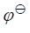
4902
已知在Ag+-乙二胺(用L表示)络合物的溶液中，当[AgL] = [AgL2]时, c (L) = 1.6 ´ 10-2 mol / L。( 1 ) 试问[ Ag+ ]和c(Ag+)分别是多少？( 2 ) 如果把银丝插入此溶液中，试问此时条件电位[ 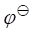
[已知 (Ag+/Ag
)= 0.799 V；Ag+-乙二胺络合物的lg b1 , lg b2分别为4.7 , 7.7 ]
(Ag+/Ag
)= 0.799 V；Ag+-乙二胺络合物的lg b1 , lg b2分别为4.7 , 7.7 ]
4903
称取含甲酸(HCOOH)的试样0.2000 g，溶解于碱性溶液后，加入0.02018 mol / L KMnO4溶液25.00 mL，待反应完成后，酸化，加入过量的KI还原过剩的MnO4-, 以及MnO42-歧化生成的MnO4-和MnO2，最后用0.1062 mol / L Na2S2O3标准溶液滴定析出的I2，消耗Na2S2O3溶液21.22 mL。计算试样中甲酸的质量分数。
[提示：HCOOH在碱性溶液中被KMnO4氧化为CO32-，Mr(HCOOH) = 46.03 ]
4904
催化反应是指_________________________________________________________，例如_________________________________________；诱导反应是指________________________ _____________________________________，例如_________________________________ 。
4905
用I2溶液滴定辉锑矿中的锑，其反应为： SbO33- + I2 + 2HCO3- = SbO43- + 2I- + 2CO2 + H2O
0.02500 mol / L I2 溶液20.00 mL恰好能滴定0.1000 g 辉锑矿中的锑。求辉锑矿中Sb2S3的质量分数。[ Mr(Sb2S3) = 339.68 ]
4906
称取某铵盐试样1.000 g，将其中的铵在催化剂存在下氧化为NO，NO再氧化为NO2，NO2溶于水后形成HNO3。此HNO3用0.01000 mol / L NaOH溶液滴定，用去20.00 mL。求试样中NH3的质量分数。[ Mr(NH3) = 17.03 ] （提示：NO2溶于水时，发生歧化反应 3NO2 + H2O = 2HNO3 + NO ）
4907
某卡尔-费休试剂 (含有I2，SO2，吡啶及甲醇的非水溶液，用来测定微量水分)，该试剂每毫升相当于2.00 mg H2O，问： ( 1 )滴定0.100 g纯Fe2(SO4)3×10H2O时，需用此试剂多少毫升？
( 2 )用于测定0.100 g CuSO4×5H2O中结晶水时，用去试剂17.85 mL，此CuSO4�q5H2O试样的纯度如何？
{ Mr(H2O) = 18.015 , Mr[Fe2(SO4)3×10H2O ] = 580.0 , Mr(CuSO4×5H2O) = 249.68 }
4908×
某钙溶液在pH = 10.0的氨性缓冲介质中，用0.02000 mol / L EDTA标准溶液滴定，耗去40.00 mL。计算相同体积的钙溶液采用KMnO4间接法测定钙时，消耗0.02000 mol / L KMnO4标准溶液多少毫升？
4909
准确称取维生素C ( C6H8O6 )试样0.1988 g，加新煮沸过的冷蒸馏水100 mL和稀醋酸10 m L，加淀粉指示剂后，用0.05000 mol / L的I2标准溶液滴定，消耗22.14 mL，求试样中维生素C的质量分数。[ Mr (C6H8O6) = 176.1 ] 反应如下：C6H8O6 + I2 = C6H6O6 + 2HI
4910
测定油漆填料红丹中Pb3O4的含量。称取试样0.2048 g，先用HCl处理试样，再将溶液调成弱酸性，加入K2CrO4使Pb2+沉淀为PbCrO4。将沉淀过滤，洗涤并溶于酸中，再加入过量KI后，用0.1000 mol / L的Na2S2O3标准溶液滴定析出的I2，用去24.68 mL。计算试样中Pb3O4的质量分数。[ Mr(Pb3O4) = 685.6]
4911
将等体积0.40mol / L的Fe2+溶液和0.10 mol / L Ce4+溶液相混合，若溶液中H2SO4浓度为0.5 mol / L。问反应达到平衡后，Ce4+的浓度是多少？
[在0.5 mol / L H2SO4介质中 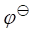 ¢ (Ce4+/Ce3+)
= 1.45 V ]
¢ (Ce4+/Ce3+)
= 1.45 V ]
4912
在 1 mol / L HCl溶液中， ¢ (Cr2O72-/Cr3+)
= 1.00 V。计算用固体亚铁盐将0.100
mol / L K2Cr2O7溶液还原至一半时的电位。
全后,酸化溶液, 加入 0.4913 mol/L Na2C2O4
溶液 25.00 mL, 此时所有高价锰均还原至 Mn2+, 以 0.1160 mol/L KMnO4 溶液滴定过量 Na2C2O4,
终点时消耗 2.30 mL。计算试液中乙二醇的浓度。
反应: HO-H2C-CH2-OH
+ 10 MnO4-+14 OH-= 10 MnO42-+
CO32-+ 10 H2O
¢ (Cr2O72-/Cr3+)
= 1.00 V。计算用固体亚铁盐将0.100
mol / L K2Cr2O7溶液还原至一半时的电位。
全后,酸化溶液, 加入 0.4913 mol/L Na2C2O4
溶液 25.00 mL, 此时所有高价锰均还原至 Mn2+, 以 0.1160 mol/L KMnO4 溶液滴定过量 Na2C2O4,
终点时消耗 2.30 mL。计算试液中乙二醇的浓度。
反应: HO-H2C-CH2-OH
+ 10 MnO4-+14 OH-= 10 MnO42-+
CO32-+ 10 H2O
4914
漂白粉中的“有效氯”可用亚砷酸钠法测定： Ca(OCl)Cl + Na3AsO3 = CaCl2 + Na3AsO4
现有含“有效氯”29.00%的试样0.2400 g，用20.00 mL Na3AsO3溶液恰好能与之完全作用，问每毫升Na3AsO3溶液含有多少毫克砷？同样质量的试样用碘量法测定，需用Na2S2O3标准溶液 (1 mL相当于0.01250 g CuSO4×5H2O )多少毫升？ [Ar(Cl) = 35.45 , Ar(As) = 74.92，Mr(CuSO4×5H2O) = 249.68 ]
4915
已知  (Hg22+/2Hg)
= 0.792V, Ksp(Hg2Cl2)=1.32×10-18，计算(Hg2Cl2/2Hg)的值。如果溶液中Cl-的浓度为0.010 mol / L，求Hg2Cl2/2Hg电对的电位。
(Hg22+/2Hg)
= 0.792V, Ksp(Hg2Cl2)=1.32×10-18，计算(Hg2Cl2/2Hg)的值。如果溶液中Cl-的浓度为0.010 mol / L，求Hg2Cl2/2Hg电对的电位。
4916
根据标准电极电位，计算下列反应的平衡常数。
[ (IO3-/I2)=
1.20 V，
(IO3-/I2)=
1.20 V， (I2/I-)=
0.535 V ]
(I2/I-)=
0.535 V ]
4917
将一块纯铜片置于0.050 mol / L AgNO3溶液中，计算 ( 1 ) 此反应的平衡常数； (2 )溶液达到平衡时 Cu2+与Ag+的浓度。[ (Cu2+/Cu) = 0.337 V，
(Cu2+/Cu) = 0.337 V， (Ag+/Ag)
= 0.80 V ]
(Ag+/Ag)
= 0.80 V ]
4918
于0.100 mol / L Fe3+和0.250 mol / L HCl混合溶液中，通入H2S气体使之达到平衡，求此溶液中Fe3+的浓度。[已知H2S饱和溶液的浓度为0.100 mol / L， (S/H2S)
= 0.141V，(Fe3+/Fe2+)
= 0.71 V]
(S/H2S)
= 0.141V，(Fe3+/Fe2+)
= 0.71 V]
4919
已知 (Pb2+/Pb)
= -0.126V，PbI2的Ksp = 1.0 ´ 10-8，求(PbI2/Pb)的值。[设 [I-] = 1 mol / L ]
(Pb2+/Pb)
= -0.126V，PbI2的Ksp = 1.0 ´ 10-8，求(PbI2/Pb)的值。[设 [I-] = 1 mol / L ]
4920
用于催化氧化还原反应的酶，具有氧化态和还原态，两者相差两个电子。pH
= 7.0时，酶的氧化态与氧化还原指示剂 (指示剂的两种价态相差一个电子)的氧化态混合。在惰性气氛的保护下，混合物用连二亚硫酸钠部分地还原，通过分光光度法测定平衡时混合物的组成。已知：酶(氧化态) =
4.2 ´ 10-5 mol / L ，酶(还原态) =
1.8 ´ 10-5 mol / L ，指示剂(氧化态) =
3.9 ´ 10-5 mol / L，指示剂(还原态) =
5.5 ´ 10-5 mol / L，已知指示剂的¢＝- 0.187 V，求酶的 ¢酶为多少伏？
¢酶为多少伏？
4921
移取10.00 mL工业甲醇，在H2SO4溶液中与25.00 mL 0.01667 mol / L K2Cr2O7溶液作用。反应完成后，以邻苯氨基苯甲酸作指示剂，用0.1000 mol / L (NH4)2Fe(SO4)2溶液滴定剩余的K2Cr2O7，用去10.00 mL。求试液中甲醇的质量浓度是多少？ [ Mr(CH3OH) = 32.00 ]
4922
取25.00 mL待测溶液通过Jones还原器，MoO42-转化为Mo3+。当滤液到达微红色终点时，需用0.01033 mol / L KMnO4溶液16.43 mL ( MnO4- + Mo3+ ® Mn2+ + MoO22+ )，测定空白时，需用此KMnO4溶液0.04 mL。求待测液中钼酸盐的浓度。
4923
称取0.8060 g含有NaNO2和NaNO3的固体试样，配制成100.0 mL溶液，取该溶液25.00mL，在强酸溶液中，用50.00 mL 0.1186 mol / L Ce4+溶液处理5min(此时试样中的NaNO2被氧化为NaNO3)，滴定剩余的Ce4+时，用去0.04289 mol / L硫酸亚铁铵溶液31.13 mL。计算固体试样中NaNO2的质量分数。
[ Mr(NaNO2) = 69.00 ]
4924
10.0 g土样中的硒以四溴化物形式蒸馏，将蒸馏物收集于水溶液中，SeBr4水解为SeO32-。今用滴定碘法测定SeO32-，滴定时，需4.50 mL Na2S2O3标准溶液，每毫升此Na2S2O3溶液相当于0.0490 mg K2Cr2O7。问在土样中硒的含量是多少(以mg / g表示)？ [ Ar(Se) = 78.96 , Mr(K2Cr2O7) = 294.18 ]
4925
采用碘量法标定Na2S2O3溶液时，0.1262 g高纯KBrO3需用44.97 mL Na2S2O3溶液标定，此Na2S2O3溶液的浓度是____________ mol / L。 [ Mr(KBrO3) = 167.0 ]
4926
在酸性溶液中，为了使0.2000 g纯Na2C2O4被完全氧化，需KMnO4溶液31.00 mL。若以碘量法滴定该KMnO4溶液25.00 mL，需0.1000 mol / L Na2S2O3标准溶液多少毫升？ [ Mr(Na2C2O4) = 134.0 ]
4927
测定钢铁中硫的含量时，称取试样0.5000 g，如果此钢铁样中的含硫量为0.12%，滴定用去碘标准溶液6.00 mL。问1.0升碘标准溶液中含碘多少克？ [ Mr(I2) = 253.8 , Ar(S) = 32.07 ]
4928
有纯铜0.1105 g，用酸溶解后加入过量的KI，以淀粉作指示剂滴定析出的碘，耗去39.42 mL Na2S2O3溶液。另取一份铜矿试样0.2129 g，用相同的方法测定，消耗Na2S2O3溶液28.42 mL，求铜矿中铜的质量分数。[ Ar(Cu) = 63.55 ]
4929
在60℃的4 mol / L HClO4溶液中，用50.0 mL 0.0837 mol / L Ce(Ⅳ)溶液处理100.0mL丙三醇水溶液，15min后，丙三醇被氧化成为甲酸： CH2(OH)CH(OH)CH2(OH) → 3HCOOH
多余的Ce(Ⅳ)用去12.11 mL 0.0448 mol / L Fe(Ⅱ)溶液，邻二氮菲亚铁为指示剂。求丙三醇水溶液中所含丙三醇的质量浓度。[Mr(丙三醇) = 92.1 ]
4930
某酸性试液中含有Fe2+和Fe3+，今移取25.00 mL试液，直接用0.01000 mol / L K2Cr2O7标准溶液滴定，耗去12.73 mL；另取25.00 mL试液，用SnCl2还原并加入HgCl2后，再用同样的K2Cr2O7标准溶液滴定，耗去28.51 mL。计算试液中Fe2+和Fe3+的浓度。
4931
0.2005 g H2C2O4・2H2O恰能与32.71 mL KMnO4溶液反应。此KMnO4溶液的浓度是_______ mol / L 。[ Mr( H2C2O4・2H2O) = 126.07 ]
4932
用碘量法可测定吐酒石中锑的含量，反应式如下：K(SbO)C4H4O6 + I2 + 2NaHCO3 = K(SbO2)C4H4O6 + 2NaI + 2CO2 + H2O 现称取吐酒石试样0.3875 g，加入0.05000 mol / L I2溶液25.00 mL与试样反应，过量的I2用去0.05000 mol / L Na2S2O3溶液3.00 mL。求此试样中三价锑的质量分数。[ Ar(Sb) = 121.75 ]
4933
少量金可用碘量法测定，反应如下：AuCl3 + 3KI = AuI + I2 + 3KCl
含金0.030%的金矿1.000g，需多少毫升0.001000 mol / L Na2S2O3溶液滴定析出的游离I2？
[ Ar(Au) = 196.97 ]
4934
1.00 mL KMnO4溶液恰和0.1250 g Fe2+完全反应，而1.00 mL KHC2O4×H2C2O4溶液又恰同0.175 mL KMnO4溶液完全反应，那么1.00 mL KHC2O4×H2C2O4将同多少毫升0.200 mol / L的NaOH溶液完全反应？ [Ar(Fe) = 55.85 ]
4935
0.1500 g铁矿试样中的铁被还原后，需0.02000 mol / L KMnO4溶液15.03 mL与之反应，铁矿中以Fe，FeO，Fe2O3表示的质量分数各为多少？[ Ar(Fe) = 55.85 , Mr(FeO) = 71.85 , Mr(Fe2O3) = 159.69 ]
4936
用KMnO4法可间接测定Ca2+。先将Ca2+沉淀为CaC2O4，再经过滤，洗涤后将沉淀溶于热的稀H2SO4溶液中，最后用KMnO4标准溶液滴定H2C2O4。若此时溶液的酸度过高，使结果_________；若溶液的酸度过低，则结果_______________。(答偏低，偏高或无影响)